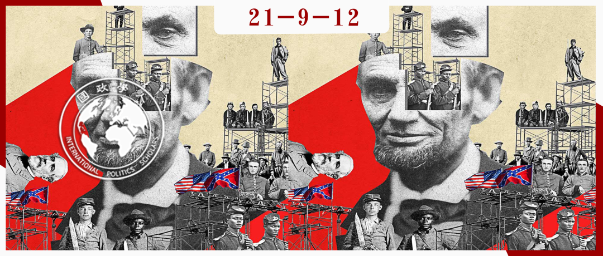

收录于合集 #美国研究 24个
作品简介
作者： Daniel Byman，美国乔治城大学渥许外交学院政治学教授，布鲁金斯学会高级研究员兼主任。他研究的领域主要在于中东问题与恐怖主义，时常为美国政府撰写有关国际政策、中东地区外交关系、中东安全问题的报告。
编译： 池佳曈（国政学人编译员，吉林大学行政学院）
来源：
Byman, D. (2021). White Supremacy, Terrorism, and the Failure of Reconstruction in the United States. International Security, 46(1), 53-103. https://doi.org/10.1162/isec_a_00410
归档： 《国际关系前沿》2021年第9期，总第36期。

内容提要
本文作者认为美国重建时期在某些方面是失败的，白人至上主义者通过暴力逆转了黑人的政治利益，而联邦政府少有作为。本文首先介绍了在内战后未能重塑政府和社会的原因，主要关注三类：结构性因素、联邦层面的决策和地方层面的决策。第二部分列出因变量并提出了采取反事实分析的理由。第三部分回顾了重建时期的历史，重点关注了南方的经济崩溃、投票争端，特别是白人至上主义的暴力。第四部分利用第一部分中确定的理论因素来评估相关问题。第五部分推测了可能的替代政策，以及它们可能对重建成功产生何种影响。本文最后讨论了美国历史的重建教训、冲突后如何建设和平以及对分裂社会的干预措施。
文章导读
01
解释失败的可能因素
1.结构因素
**
**
结构性因素可能导致镇压叛乱的失败。一些学者强调了 国家已有的经济结构与总体经济发展水平 对于民主化与和平占领的重要作用。美国内战后南方的经济问题将创造不稳定的环境，更有可能引发暴力与重建的失败。内战结束后， 国家权力制度 可能很薄弱甚至不存在。美国南方缺乏法律和秩序，这使得反对叛乱支持的州政府失去合法性，进而促进武装组织的产生。此外， 战争如何结束 也决定了战后暴力和内战重演的可能性。美国内战北方取得的决定性胜利使得民主政治体系更易于建立，因为胜利一方的制度更加强大。另一个结构因素涉及 战前的动员水平和制度化水平 。潜在的叛军拥有技术、人力资源和社会资本，可能在煽动动荡时利用这些资源。
2.政策因素：联邦政府层面
**
**
国家层面的决策塑造了反对叛乱的总体目标、资源水平、军队和文职当局的任用以及撤军的条件。决策者也是值得考虑的因素，美国内战结束几年内，联邦政府领导层的质量形成了鲜明对比。林肯在战争结束时被暗杀，约翰逊则在重建战后秩序的关键时刻就职。为了应对可能面临的挑战，反对叛乱的政治和军事领导层必须制定明确的目标，并确保军事努力遵循这些政治目标。如果没有多方努力，为新政治体系建立合法性的目标难以实现。成功的反叛乱往往需要大量军队，在重建期间，部队人数有所不同，但尽管暴力程度很严重，但随着重建工作的进行，部队人数将大幅下降。虽然理想状态下和平与治理将在内战结束后迅速恢复，但反对叛乱必须为长期的斗争做好准备。撤军的构想也尤为重要，尤其是在地方制度薄弱的条件下。当结束军事存在时，外部权力必须确保成功，或以一定程度的条件震慑暴力，以捍卫所取得的成果。
3.政策因素：地方层面 ****
在得到地方支持时，治理能够取得最佳效果，这需要政府具备 合法性 。如果地方政府难以实现合法性，叛乱者的召集将更加容易，由此产生的暴力将进一步削弱政府的合法性。合法性要求建立有能力提供服务的正常政府，因此反对叛乱必须能够招募强有力的地方合作者。当政府能够实现这一目标时，会获得更多的军队和情报，从而使得人们更愿意为捍卫新制度付出努力。在此过程中，拆台者（spoiler）往往参与阻止和平、扰乱新秩序，即使相对较小的群体也具备推翻和平协定的可能性。
02
概念、争论与反事实分析
为评估上述各因素对于重建失败的解释力，文章采用了以下方法：首先，作者定义反叛乱和恐怖主义，以阐明这些术语对于重建时代的政治暴力的适用性。第二，作者运用路径依赖和反事实（counterfactual）分析的方法确定导致重建失败的因素。
1.镇压叛乱与恐怖主义
**
**
保罗·斯坦利（Paul Staniland）将叛乱定义为“一群人声称自己是一个集体组织，由正式的指挥和控制结构组成，并计划采取暴力手段夺取权力”，这一定义与重建时代的暴力行为大体相符，红衫军和三K党试图取代共和党政府在南部的领导，重建白人对该地区以及黑人的控制。叛乱者往往通过采取恐怖主义行为实现其目标，试图恐吓黑人社区和共和党白人，以阻止黑人选民及其政治活动。
成功的重建是一种后冲突时代的和平建设，强调确保人的尊严和正义，以及满足冲突后的经济需求。作者将成功定义为确保前期联邦的社会、政治、经济条件平等，并建立包括选举、民主法治的真正的民主制。这些目标的实现需要防止针对黑人社区及其白人支持者的大规模暴力。考虑到当时南方民主党公开的种族主义议程，成功同样需要保留共和党的统治。
2.路径依赖与反事实
为解释重建的失败，作者使用路径依赖和反事实来进行分析。如果路径依赖生效，那么诸如暴力的传播等后来发生的事件对于此前的决定有高度敏感性。随着时间的推移，初期阶段起作用的解决方案此后未必可行。反事实通过“没有实际发生的事件”来帮助学者评估因果假设。当一个特定情况的观察次数较少且有多个变量起作用时，反事实作用格外明显。
在下一章中作者将重点关注路径依赖和反事实分析的三个方面：顺序（sequencing）、关键节点（critical junctures）和替代政策选择（alternative policy choices）。重建期间发生的一系列事件至关重要，早期阻止的暴力行为的失败使其在随后的几年里更加危险。最后，作者探讨了几个“假如……该怎么办”的问题，以说明不同政策选择的相对重要性。
03
混乱的重建历史
重建是美国历史上最动荡的时期之一，伴随着前奴隶惊人的政治进步，在和平时期联邦政府前所未有的作用以及可怕的暴力，本节将对这一时期进行介绍。
1. 重建工作概述
**
**
美国内战结束后，林肯在1865年被刺杀，新任总统约翰逊试图以宽松的条件使南方各州重新加入联邦，而大多数激进共和党人则寻求更广泛的目标。1865年、1866年南方各州颁布了所谓的黑人法典，以确保缺乏奴隶制的情况下实施种族控制，其内容包括剥夺黑人投票权及其他权利。黑人公民迅速组织起来寻求得到平等对待，但受到白人的镇压，残酷的镇压和对于法典的愤怒推动黑人权利进入国家政治议程。重建通常被视为始于1867年，国会不顾约翰逊总统的否决通过三项重建法案。没有任何宪章或宣言规定重建的目标，且重建的优先事项因领导人和时间不同而异。重建工作通常被认为是在十年后结束的，即“1877年妥协”。
2.南方经济与治理的崩溃
**
**
重建开始时，南方经济受到破坏。到1868年，种植园经济逐渐稳定，但许多贫穷的南方白人面临着来自黑人劳工的竞争。尽管旧秩序下的经济形势十分困难，但刚被释放的黑人群体则面临着更加糟糕的处境，大部分资源掌握在南方白人手中。国会为解决这一问题，成立了自由人局（Freedmen’s Bureau）以保护此前曾为奴隶者的权利。然而种族权力的失衡是严重的，这一努力受到南方白人的阻挠，自由人局使黑人公民失望。除经济压力外，前南方邦联的大部分地方政府也已经崩溃，犯罪活动日渐频繁，三K党及类似组织自视为法律的守护者。
3.重建之下的投票
投票权是双方的政治武器，虽然黑人群体在政治参与方面取得了显著进展，但投票本身不足以在面对极端暴力时保护其权利。在1870年通过第15修正案之前，黑人投票权一直面临着不确定。该修正案禁止联邦或州政府根据公民的种族、肤色或以前曾是奴隶而限制其选举权。林肯曾就未来的黑人权利发表相互矛盾的宣言，而约翰逊则并不想在联邦层面强化黑人权利。一旦南方黑人赢得选举权，他们往往会发挥相当大的影响力。在1875年，美国黑人代表人数达到了顶峰，8名国会议员代表6个不同的州。
4.暴力与军队统治
**
**
暴力事件在整个重建过程中都很常见。三K党等白人至上主义团体出现在整个南方，通过使用武力和威胁，恐吓或阻止黑人投票，并为反对黑人平等的民主党人获得权力铺平了道路。种族暴力在南方白人之中盛行，在州政府和联邦政府选举前尤甚。共和党政客，尤其是黑人政客及社区领导者面临着最大的风险。随时间的推移，白人至上主义的暴力对投票与权力平衡以及政府机构造成了影响，但地方当局对此感到无能为力。随着民主党开始夺回权力，共和党在国会通过了执行法案（Enforcement Acts）并取得了一定的成果，但这些法案在军队方面存在局限性，白人至上主义团体也逐渐学会更有效地合作。
5.重建的终结
随着白人民主党人在地方和州以及控制政治权力，他们颁布法案进一步剥夺此前被奴役者的公民权。与此同时，政治腐败也加剧了重建面临的问题，削弱了对共和党激进议程的支持。1877年之后，随着民主党在州议会掌权，暴力转移到了结构性的州层面，那里黑人的从属地位得到了法律支持。
04
为何白人至上的暴力得以盛行
白人至上主义者利用暴力停止并最终推翻了重建政策。南方的经济与治理问题显然阻碍了重建，但未能部署足够的军队、展开长期占领计划等因素也同样重要。
1.评估结构因素
**
**
南方地区的重建总体情况是复杂的，但失败并非已成定局。南方白人至上主义者在动员方面享有结构性优势，经济和治理的挑战使得重建形势更为严峻。就联邦政府而言，它在打击白人至上主义暴力方面享有几项重要优势——尤其是强大的政治意愿。然而，政府的政策选择并未纠正结构性问题，尤其在动员黑人等方面甚至加剧问题严重性。
2.评估联邦层面政策因素
**
**
联邦层面的错误决策使得白人至上主义的暴力得以发展，失败有以下几个原因：第一，联邦领导层方面，个别国家领导人并未支持白人至上主义暴力，但也未采取有效措施进行制止。第二，缺乏明确的目标。反叛乱原则要求军事和文职领导人目标一致并形成军事行动，但在重建时期往往缺乏这种清晰度。第三，部队比例以及平民能力方面，在重建的大部分时间里，美国没有部署足够的军队来确保和平，平民的能力弱，使得暴力的白人至上主义者拥有更多的行动自由。第四，缺乏长期占领或适时撤退的计划。
3.评估地方层面政策因素
州一级的治理在许多南方白人眼中缺乏合法性，这帮助叛乱分子招募和行动，并使联邦政府更难停止暴力。此外，美国政府也未能找到有效的地方合作者。事实证明，南方白人共和党人很容易受到来自其他南方白人的社会和经济压力，随着时间的推移削弱了共和党联盟。此外，国家和州政府无法保护白人共和党领导人，这大大提高了地方合作的代价。
4.综合因素
暴力具有路径依赖效应，当其开始出现于重建时期，参与的团体规模相对较小。由于军队没有全面部署，暴力行为基本上没有受到惩罚，三K党等组织成了其他人的榜样，削弱了人们对共和党领导层的信心。这种不作为增加了更多暴力的风险，并削弱了共和党州政府的合法性。随着暴力的蔓延和压制暴力的成本上升，共和党领导人将不得不付出更高的政治代价来平息杀戮，从而造成一个危险的循环。
05
混乱的重建历史
美国国家、军事和共和党领导人并未寻求可能成功概率更大的方案，作者在下文运用反事实进行分析。
1.武装黑人社区
**
**
理论上，缺乏足够的军队以及对共和党领导人、选举人和自由人局官员的保护可以通过动员、武装和训练此前被奴役的当地民兵来保护其投票权和社区来解决。然而地方黑人群体则面临安全困境：失去武器则脆弱，拿起武器则引发白人的恐惧。在当代冲突中，武装一个群体可能引起另一个群体的强烈反对。在一个充满恐惧的敌对团体看来，为了所谓的自卫而拿起武器证明动员团体是敌对的或威胁权力平衡的。
2.更多军队与持久占领
重建时期的美国人对一个强大的联邦政府表示高度怀疑，因此将民事权利持续交给军队的做法得到的支持有限。如果激进共和党人能够保证军队长期占领，黑人的政治权利可能会得到巩固。
3.重塑身份分裂
叛乱者试图利用身份分裂，而反对叛乱可以通过促进身份交叉挫败这种尝试。尽管南方白人大多数认为黑人应该服从于他们，但往往在经济政策上存在分歧，这是共和党可能利用的一个潜在分裂点。然而，暴力本身团结了不同阶层的南方白人。为了确保南方白人之间的分歧是政治认同的主要来源，共和党人将不得不淡化黑人平等问题，这将损失其潜在的选民。
4.破坏对方经济力量
南方白人的部分权力来自于其主导的经济地位，政府本可以重新分配财产并为贫困黑人农民提供经济援助，但土地再分配与当时自由放任的主导思想背道而驰。然而美国黑人缺乏足够的武装力量，需要依靠政府的保护，白人地主则势必将通过暴力手段夺取土地，其行为将受到当地法院的支持。土地再分配将使无敌的白人农民更加倾向于采取暴力手段，这种再分配需要采取长期的政治控制。
06
结论
美国内战后期南方为暴力滋长提供了土壤，但联邦政府当局未能加以制止。这一过程中的结构性问题不断浮现并加剧了挑战，重建政策的设计师未能在南方部署足够的军队或采取其他方式捍卫新政治制度，这使得三K党及其他暴力团体有了可乘之机。白人种族主义者在重建期间取得的胜利使得他们在随后的几年面对社会地位的威胁时可以利用大量的暴力手段。重建后南方经济、政治与社会的种族主义深刻改变了美国，包括黑人财富和教育水平的降低、黑人群体大规模向北方城市的迁移。事实上，今日美国依然处于重建的阴影之下。
在任何社会中建设真正的民主都是困难的，冲突之后尤甚。激进的共和党人将目光投向投票，但真正的民主要求法治，必须在地方和国家层面贯彻执行。此外，还需要彻底的司法改革和警务系统，以及必要时充当警察的军事力量。正是由于缺乏法治，白人至上主义者最终能够利用选举和其他工具。后重建时代依然充满流血冲突，但强于重建时期。然而，以稳定的名义进行妥协也意味着在黑人投票权与平等问题上让步，这巩固南北战争后国家层面的不公正。为争取自由，长期的斗争不可避免。
译者评述
美国重建时期是国家从战时走向正常状态的过渡时期，本文作者从种族的视角出发，从采取的手段方面进行分析，认为重建在某种意义上是失败的。这一时期，白人至上主义者通过暴力手段逆转了黑人的政治利益，联邦政府对此无能为力。文章回顾了重建时期的历史，重点关注了南方的经济崩溃、投票争端，特别是白人至上主义的暴力。文章分析了南北战争后美国重塑政府和社会的努力失败的原因，主要关注结构性层面、联邦层面的决策和地方层面的决策。研究方法方面，作者采取反事实分析。勒博（Richard Lebow）对反事实分析进行过系统论述，他指出反事实分析的基本模型是“如果某个假设为真，会产生何种后果”。文章反事实分析的假设条件具备可行性，以严谨的理论作为基础，并将分析置于复杂的社会系统背景之下，在反事实分析层面论证严谨。文章第四部分利用第一部分中确定的理论因素来评估相关问题，进而推测可能的替代政策，以及它们可能对重建成功产生何种影响。最后，作者讨论了美国历史的重建教训、冲突后如何建设和平以及对分裂社会的干预措施。重建时期的经验教训对今日美国依然有借鉴意义，针对少数族裔的种族主义与暴力事件并未彻底离场，弗洛伊德事件仍历历在目，实现种族平等任重而道远。
词汇整理
美国重建时期 Reconstruction Era
白人至上主义者 white supremacist
三K党 Ku Klux Klan (KKK)
拆台者 spoiler
反事实 counterfactual
路径依赖 path-dependent
关键节点 critical junctures
责编 | 唐一鸣 张鸿儒
排版 | 刘吉文 方引弓
文章观点不代表本平台观点，本平台评译分享的文章均出于专业学习之用, 不以任何盈利为目的，内容主要呈现对原文的介绍，原文内容请通过各高校购买的数据库自行下载。

国政学人
支持学术公益与知识传播
微信扫一扫赞赏作者 __赞赏
已喜欢，对作者说句悄悄话
取消 __
发送给作者
发送
最多40字，当前共字
上一页 1/3 下一页
长按二维码向我转账
支持学术公益与知识传播
受苹果公司新规定影响，微信 iOS 版的赞赏功能被关闭，可通过二维码转账支持公众号。